Using Visual Studio Code as App editor
Abstract: This section describes how to use Visual Studio Code as App editor with features like auto completion and Intellisense for ZEISS INSPECT API functions or insertion of ZEISS INSPECT Elements.
Setup
Caution
This setup requires ZEISS INSPECT 2025 Service Pack 1 or newer!
Python installation
Using VSCode as App editor requires an additional Python 3.9 installation. Follow the installation instructions of your local IT or download and install Python 3.9 from www.python.org.
Install the zeiss-inspect-api Python wheel matching your ZEISS INSPECT version via command line:
python -m pip install zeiss-inspect-api==2025.*
ZEISS INSPECT configuration
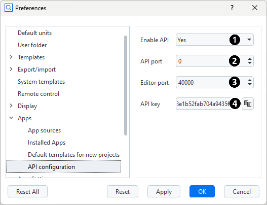
Select Edit ► Preferences and navigate to Apps ► ‘API configuration’.
Enable API (1): Determines if the API functions can be reached via socket communication.
Set to ‘Yes’.
API port (2): Socket port for calling ZEISS INSPECT API functions.
If set to ‘0’ (default), a port is chosen automatically. Set a free port manually if you are running multiple ZEISS INSPECT instances in parallel on the same computer.
Editor port (3): Socket port for connecting an external App editor.
Must be set to a free port. The default (‘40000’) is usually fine.
API key (4): Unique key which protects connections to the ZEISS INSPECT API.
The API key is set to a unique, random value when ZEISS INSPECT is installed. It has to be copied into the client application (see VSCode configuration).
VSCode configuration
Install Visual Studio Code
Install the most recent ‘ZEISS INSPECT App Development’ extension for Visual Studio Code.
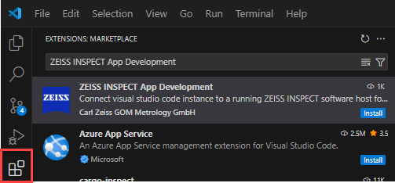
The extension is provided in the Visual Studio Marketplace.
Caution
For ZEISS INSPECT 2023 and before (including GOM Inspect versions), you must use extension version “2024.x.y” which can be installed via the “Install Specific Version…” menu.
Edit the ‘ZEISS INSPECT App Development’ extension settings:
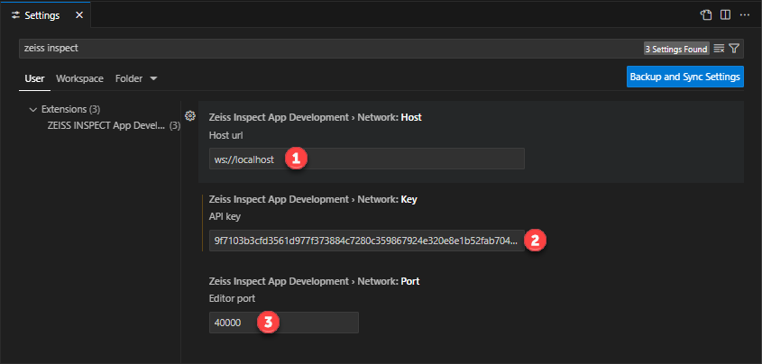
Host URL (1): Host running the ZEISS INSPECT application.
This is usually ‘ws://localhost’.
API key (2): The unique ZEISS INSPECT application API key.
Copy the key from your ZEISS INSPECT preferences (see ZEISS INSPECT configuration).
Editor port (3): This port is used to access Apps installed / edited in ZEISS INSPECT.
Copy the editor port from your ZEISS INSPECT preferences (see ZEISS INSPECT configuration).
Select the Python interpreter:
From View ► ‘Command Palette…’ (
Ctrl+Shift+P) choose ‘Python: Select Interpreter’Select the interpreter from your separate Python 3.9 installation (see Python installation).
Connect VSCode to ZEISS INSPECT
Caution
Your current VSCode workspace will be lost by connecting to ZEISS INSPECT. Save the workspace to a file if you still need it.
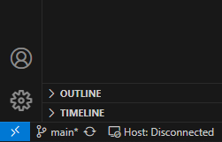
Press ‘Host: Disconnected’ in the status bar. If connecting succeeded, the status changes to ‘Host: Connected’.
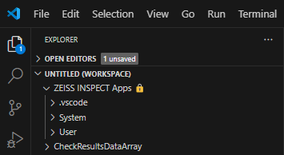
The Explorer now shows all Apps installed in ZEISS INSPECT in the section ‘ZEISS INSPECT Apps 🔒’ of the workspace. Apps in this section are read-only and can only be viewed. Apps in editing mode – ‘CheckResultsDataArray’ in the example above – are shown below this workspace section.
Note
You must use the ZEISS INSPECT App Explorer to switch Apps between finalized and editing mode!
Note
Apps in the read-only section of the VSCode Explorer are presented by a virtual file system based on websocket communication with ZEISS INSPECT. Apps in editing mode are regular files on your file system.
Editing
You can work with Apps in editing mode as with any other source file.
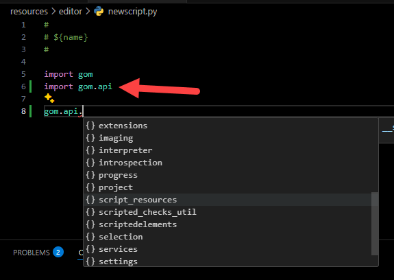
The auto completion for ZEISS INSPECT API functions is mainly based on the ‘zeiss-inspect-api’ Python wheel (see Python installation).
Important
You must import an API package into your source file to enable auto completion for it.
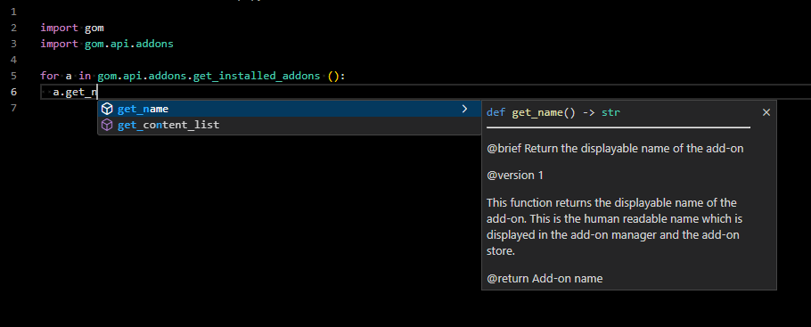
The ZEISS Inspect API wheel contains its own function and class documentation. Thus, the VSCode Intellisense can be used during development.
Recording ZEISS INSPECT Commands
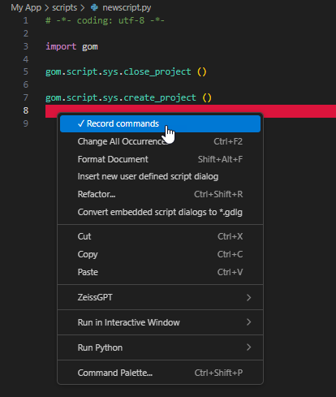
To start or stop recording of ZEISS INSPECT commands, click RMB ► ‘Record commands’ at the appropriate position of your Python file.
Inserting ZEISS INSPECT Element Values
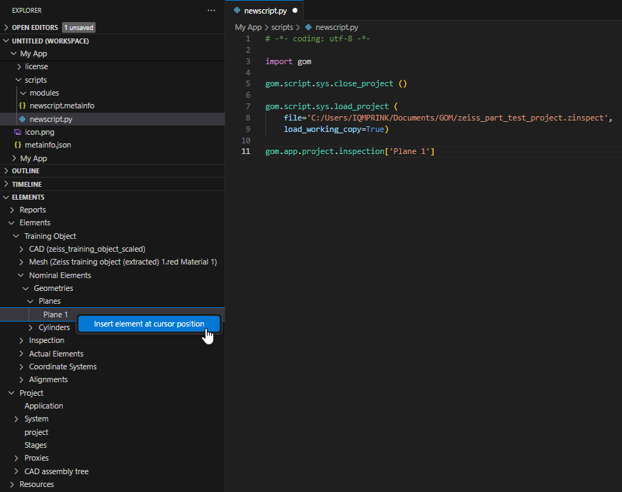
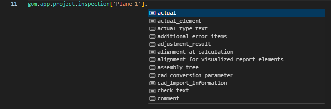
Browse the VSCode Explorer section ‘ELEMENTS’ for the desired item and click RMB ► ‘Insert element at cursor position’. In the source code, append a dot to the selected element. The auto completion allows to browse through the available element properties.
Inserting a user-defined Dialog
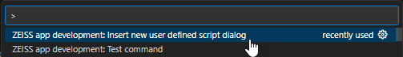
From View ► Command Palette… (Ctrl+Shift+P), select ‘ZEISS app development: Insert new user defined script dialog’.
Next, you define the dialog file name:
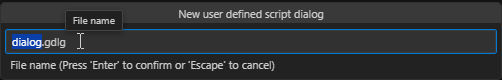
A dialog file template is created:
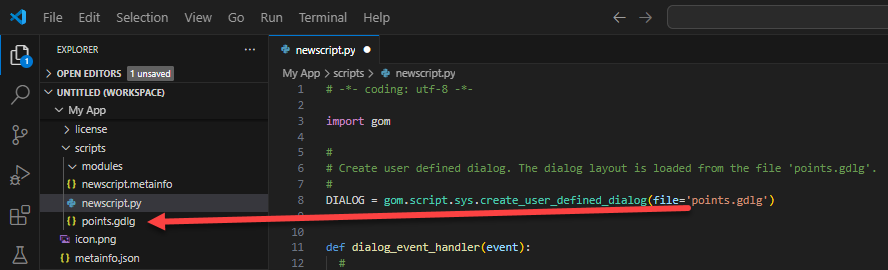
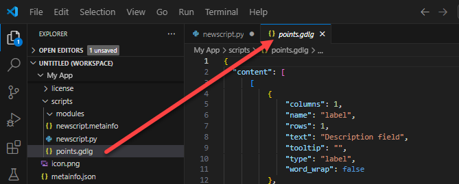
Editing a user-defined Dialog
Note
This function assumes that a dialog already exists in the App folder.
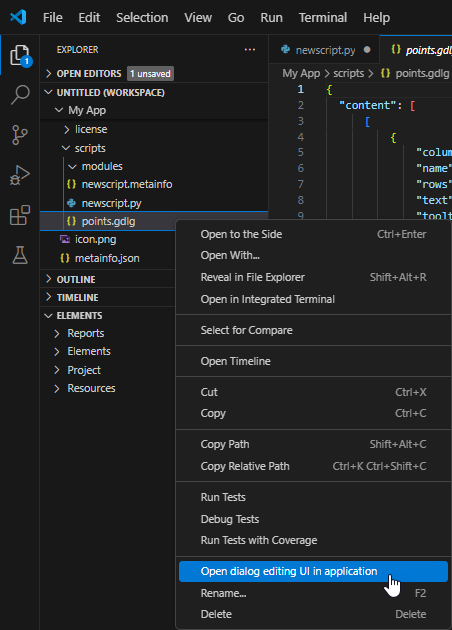
From View ► Command Palette… (Ctrl+Shift+P), select ‘ZEISS app development: Open dialog editing UI in Application’ or click RMB ► ‘Open dialog editing UI in Application’ on the dialog file.
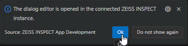
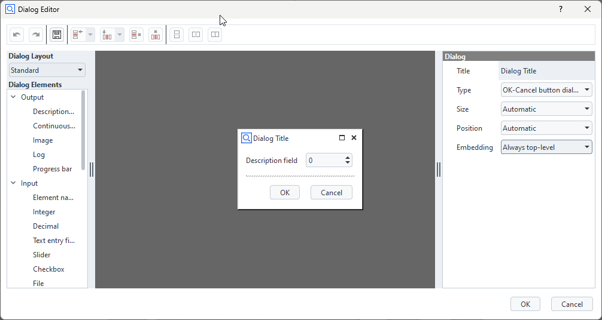
This opens the dialog in the ZEISS INSPECT Dialog Editor.
Running and Debugging Python Apps
Caution
Make sure that you have selected the right Python interpreter as described in VSCode configuration.
To run or debug a Python script in an App
Open the script in VScode
Select ‘Run and Debug’ (
Ctrl+Shift+D) in the primary side bar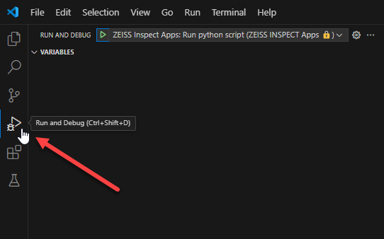
Use ‘Start Debugging’ (
F5) with the debug configuration provided by ZEISS INSPECT to run the script
See Debug code with Visual Studio Code for details.
Implementation details
When VSCode is connected to a running ZEISS INSPECT application, the virtual filesystem containing the Apps etc. also contains a matching launch.json. This launch configuration can be used out-of-the-box without setting up anything else.
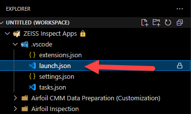
A script can then be started by selecting this launch configuration right in the debugging workspace:
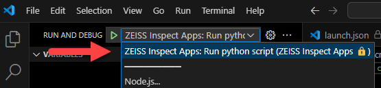
When debugging, the Python interpreter now runs directly in VSCode and the ZEISS INSPECT software is handled like a remote API. Thus, all Python debugging features can be used natively in VSCode.
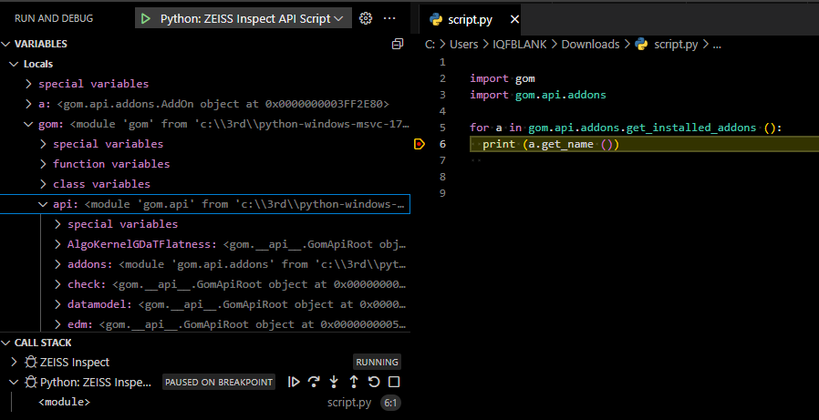